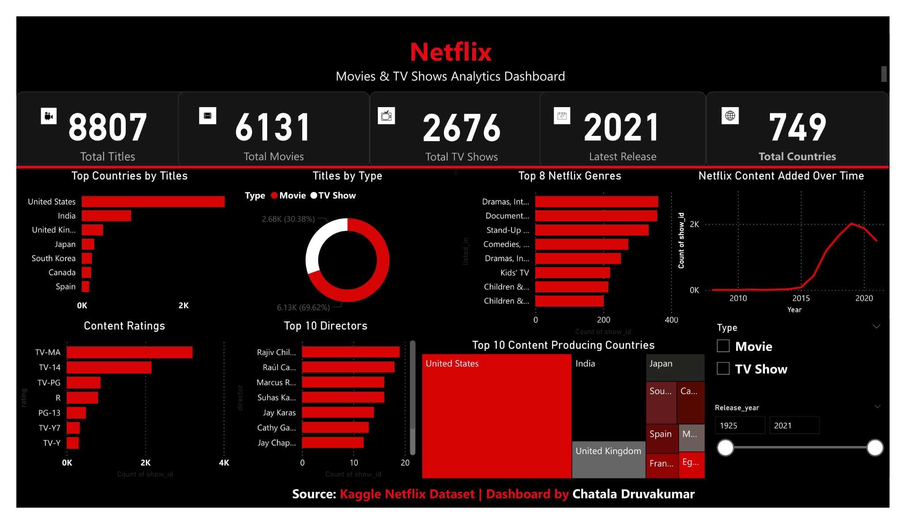
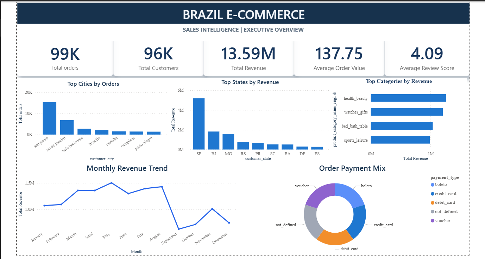
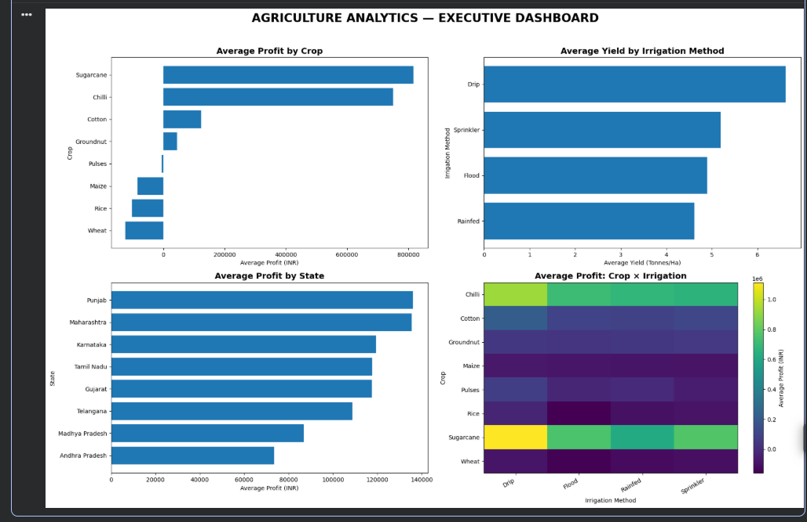
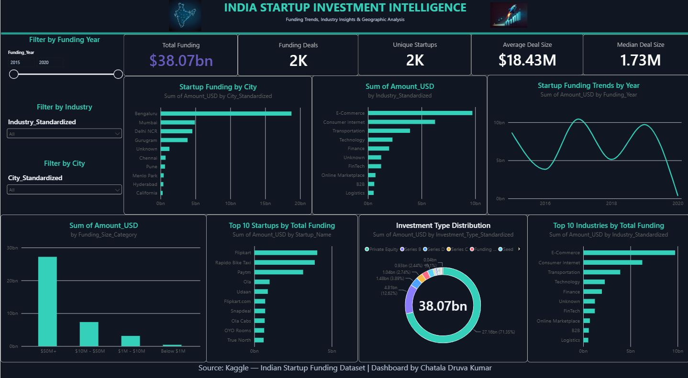
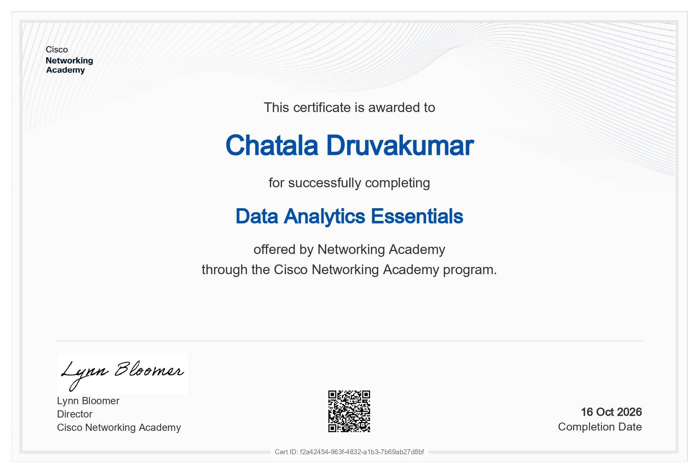
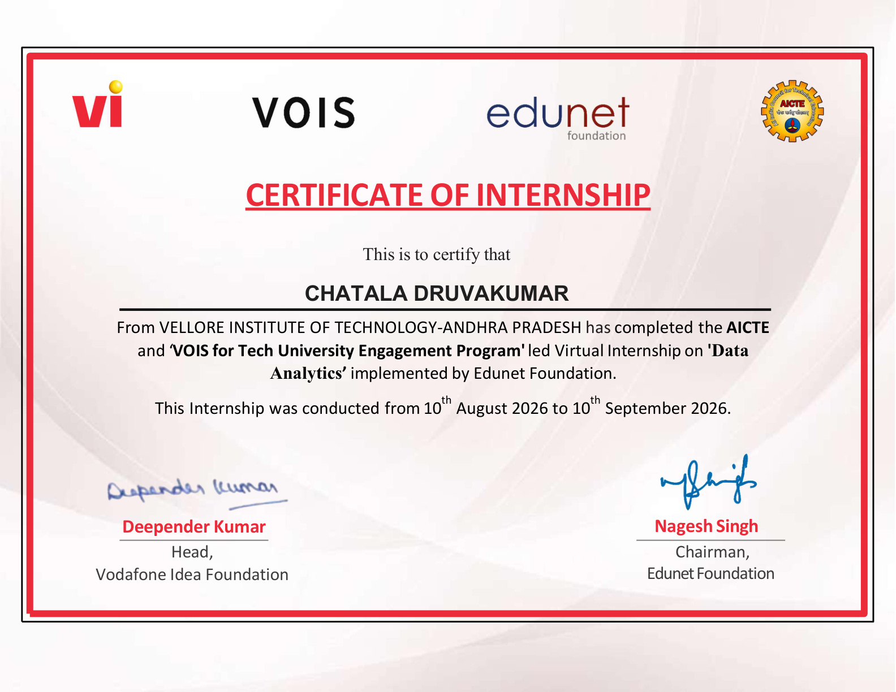
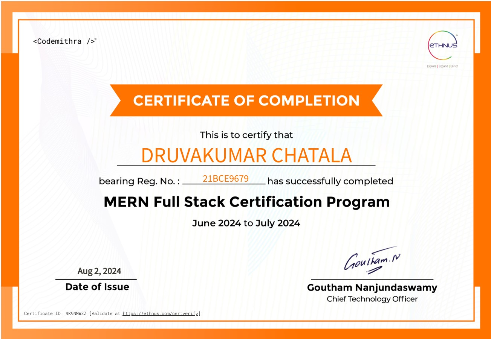
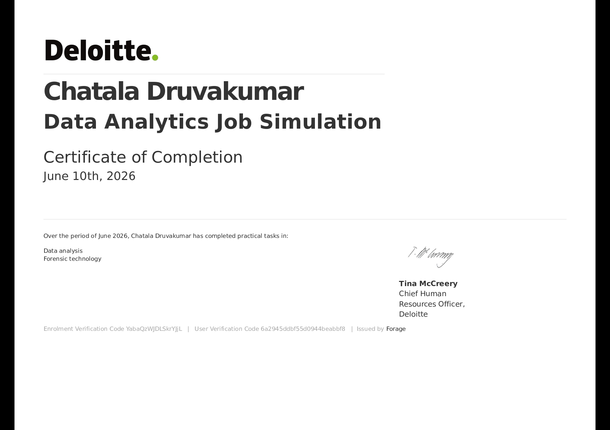
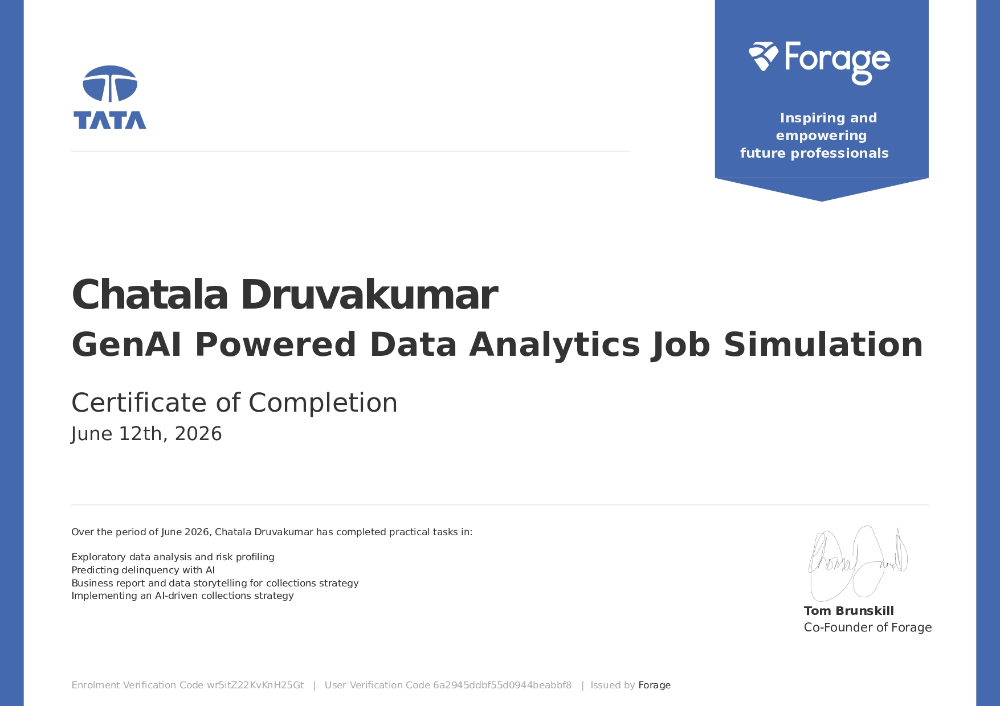
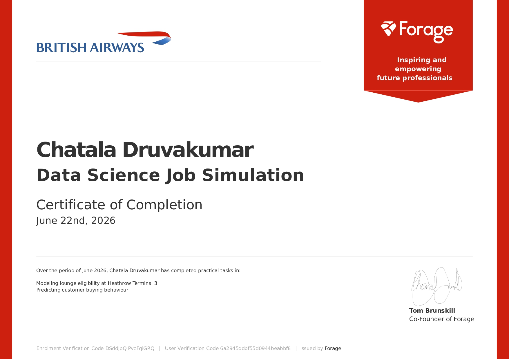

Business Intelligence & Interactive Dashboards
Build interactive dashboards that turn business data into clear performance indicators, trends, and decision-ready visualizations.
DISCOVER ↗
OPEN TO DATA ANALYST OPPORTUNITIES
Hello, my name is
I turn raw data into meaningful insights through data analysis, interactive dashboards, and business-focused storytelling.
A LITTLE ABOUT ME
Behind every meaningful business decision is a question worth exploring and data that can help answer it.
I’m Chatala Druva Kumar, an aspiring data analytics and business intelligence professional interested in transforming raw datasets into clear, useful, and actionable insights.
My approach combines data preparation, exploratory data analysis, SQL querying, Python-based analysis, and interactive dashboard development. I enjoy examining datasets, identifying patterns, comparing performance, building meaningful KPIs, and presenting findings through clear visualizations.
Through projects involving Netflix content, Brazilian e-commerce sales, agricultural performance, and startup investment trends, I have explored different analytical questions and developed practical experience working with data.
I focus on making analysis understandable and useful: not simply presenting charts, but explaining what the numbers indicate, where performance differs, and which questions deserve further investigation.
My goal is to continue growing as a Data Analyst and Business Intelligence professional, contributing analytical thinking, technical curiosity, attention to detail, and a commitment to continuous learning.
A thoughtful blend of analytical skills,
technical tools, and business understanding.
Build interactive dashboards that turn business data into clear performance indicators, trends, and decision-ready visualizations.
Building clear, interactive Power BI and Tableau dashboards that make complex data accessible.
Query and analyze structured datasets to answer business questions, compare performance, and investigate patterns.
Prepare reliable, analysis-ready datasets by investigating missing values, duplicates, inconsistent categories, incorrect data types, and data-quality issues.
Organize and analyze data using structured spreadsheets, formulas, pivot tables, and reporting workflows.
Translate analytical questions into meaningful metrics, investigate performance gaps, and communicate evidence-based findings.
Use Python, NumPy, Pandas, Matplotlib, and Seaborn to clean, transform, explore, analyze, and visualize datasets.

OPEN DASHBOARD ↗Explore the catalogue, compare movies and TV shows, analyze genres and countries, and investigate release trends.
Download Power BI Template ↗
OPEN DASHBOARD ↗Analyze customer behavior, sales performance, product categories, payments, sellers, geography, and delivery operations.
Get Power BI File (.pbix) ↗
OPEN DASHBOARD ↗Analyze 4,000 farms to understand crop profitability, irrigation performance, yield drivers, and business opportunities.
View GitHub Repository ↗Open Notebook ↗A planned healthcare analytics project exploring admissions, department performance, bed utilization, operational KPIs, and service trends.

VIEW DASHBOARD ↗Explore Indian startup funding patterns, investment amounts, funding rounds, industry segments, city-level activity, and yearly trends.
Computer Science and Engineering · Artificial Intelligence & Machine Learning
CGPA: 7.5 / 10Mathematics, Physics, Chemistry
Board of Intermediate Education, Andhra Pradesh
Board of Secondary Education, Andhra Pradesh
Percentage: 85%Completed the AICTE and VOIS for Tech University Engagement Program-led virtual internship in Data Analytics, implemented by Edunet Foundation.
View internship certificate ↗Led club activities and recruited students for the Social Media Committee, evaluating communication, creativity, and role suitability.
MY CREDENTIALS
Professional certifications, job simulations, and learning achievements.


VOIS · Edunet Foundation · AICTE
August 10 – September 10, 2026
View certificate ↗



OneRoadmap · July 2026
Add your Big Four Ready certificate image or PDF to the assets folder when available.
View certificate ↗Have an opportunity, a project, or just want to say hello? I’d love to hear from you.
chatalakumardruva@gmail.com ↗